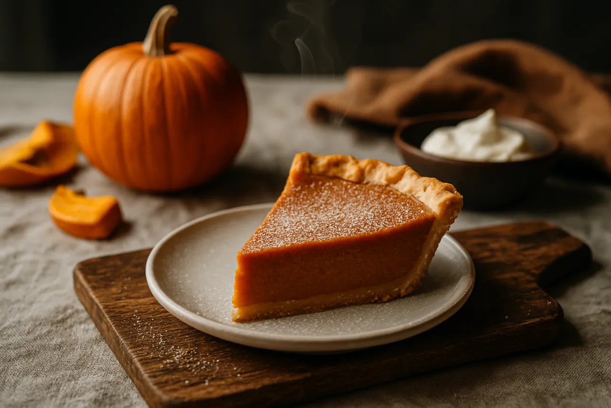

Classic Pumpkin Pie from Fresh Pumpkin
A from-scratch roasted-pumpkin custard in a buttery, flaky crust — the real Thanksgiving thing.
Open recipe →
A from-scratch roasted-pumpkin custard in a buttery, flaky crust — the real Thanksgiving thing.
Open recipe →